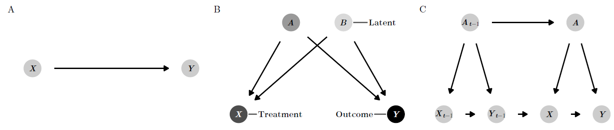

Cargando paquete requerido: sysfontsCargando paquete requerido: showtextdbCargando paquete requerido: sysfontsCargando paquete requerido: showtextdbLa advertencia común en estadísticas: “correlación no implica causalidad”, contrasta con la necesidad en ciencia política de entender causas detrás de fenómenos sociales y políticos. Ejemplos incluyen si el gasto gubernamental en educación reduce la desigualdad, o si el aumento del poder ejecutivo causa el colapso de regímenes. Estas preguntas son importantes, pero con los métodos estadísticos que cubriremos, solo podemos hablar de estas relaciones usando lenguaje asociativo. Encontramos que el gasto en educación se asocia con mayor desigualdad, y que la concentración del poder ejecutivo se asocia con una menor probabilidad de colapso del régimen. Aunque nos esforzamos en no usar lenguaje causal al interpretar estos coeficientes de regresión, estamos preocupados por la causalidad, especialmente si podemos influir en la política. Es fácil encontrar correlaciones significativas entre variables aparentemente no relacionadas. Por ejemplo, en EE. UU., el consumo per cápita de queso mozzarella está fuertemente correlacionado (\(r = 0.959\)) con el número de doctorados en ingeniería civil otorgados. Sin embargo, la relación entre queso y grados no significa que consumir más queso creará nuevos doctores, ni que el aumento de ingenieros civiles cause un aumento en el consumo de queso. Podemos descartar fácilmente esta relación como espuria.
Menos probable considerar la relación entre gasto educativo e desigualdad como espuria. Hay numerosos estudios académicos publicados que investigan la relación genuina entre ellos. ¿Por qué? La diferencia en la plausibilidad de las dos relaciones va más allá de las estadísticas. No hay una historia causal creíble que vincule el consumo de queso y los títulos doctorales, a pesar de la alta correlación entre ambos. Sí hay una historia causal creíble entre la desigualdad y la educación, ya que mejorar la calidad de la educación aumenta las oportunidades laborales disponibles para los estudiantes después de graduarse.
Esta semana, presentamos un nuevo lenguaje no estadístico para crear, medir y evaluar historias y relaciones causales utilizando datos observacionales (es decir, no experimentales). Introducimos el concepto de grafos acíclicos dirigidos (DAG) causales que nos permiten codificar formalmente nuestra comprensión de las rutas o caminos causales. Con DAG bien elaborados, podemos usar un conjunto de reglas llamado do-cálculo para hacer ajustes específicos a modelos estadísticos y aislar o identificar relaciones causales entre variables de interés.
A diferencia de la correlación, que en su esencia es simplemente una fórmula matemática, no hay una función causation() en R. La causalidad es una cuestión de filosofía y teoría, no de matemáticas. Los debates sobre la definición de causalidad se han librado durante miles de años; Platón y Aristóteles escribieron sobre la metafísica y los componentes de las relaciones causales. Por simplicidad, en este capítulo usaremos una definición bastante universal: \(X\) puede considerarse causa de \(Y\) si:
More simply, we can collapse all three of these conditions into a single definition:
Más simplemente, podemos resumir estas tres condiciones en una sola definición: Una variable \(X\) es causa de una variable \(Y\) si \(Y\) de alguna manera depende de \(X\) para su valor.… \(X\) es causa de \(Y\) si \(Y\) escucha a \(X\) y decide su valor en respuesta a lo que escucha [@PearlGlymourJewell:2016, 5--6]
El concepto de variables “escuchándose” entre sí incorpora simultáneamente asociación, orden temporal y no espuriedad. Consideremos la relación entre encender un interruptor de luz y encender una bombilla. El acto de habilitar un interruptor de luz está asociado con una bombilla que emite luz, lo que indica una asociación entre los dos. Una bombilla no puede emitir luz antes de que se encienda, asegurando así el orden temporal correcto: se debe activar el interruptor antes de que la luz se encienda. Finalmente, la asociación no es espuria ya que hay un vínculo plausible entre los dos: los pulsos eléctricos viajan a través de cables hacia equipos que transforman la energía en corriente que puede alimentar la bombilla. También podemos decir más simplemente que una bombilla “escucha” al interruptor de luz. Los cambios en el estado de encendido/apagado del interruptor influyen en el estado de la bombilla más abajo en la cadena causal. Una bombilla escucha muchos otros factores: la electricidad debe fluir hacia el edificio, los transformadores deben funcionar correctamente y múltiples interruptores pueden controlar la misma luz, pero un solo interruptor definitivamente es una de las causas de emitir luz.

Podemos codificar la filosofía o teoría de una cadena causal de eventos en un grafo acíclico dirigido, o DAG. Los DAG son modelos gráficos del proceso que genera los datos y esbozan cómo \(X\) causa \(Y\) (ver panel A de la Figura @ref(fig:general-examples)). Estos gráficos consisten en tres elementos principales: nodos, aristas (o flechas) y dirección. Los nodos representan fenómenos que tienen relaciones causales con otros elementos en el sistema. Estos pueden ser cosas que son medibles y podrían incluir un conjunto de datos, como el PIB, la población, el partido político, el tiempo en el cargo, los ingresos, la ubicación geográfica o el estatus socioeconómico. Los nodos no necesariamente deben ser medibles: limitaciones en la recolección de datos o variables abstractas pueden hacer imposible recolectar mediciones confiables sobre diferentes fenómenos. Si este es el caso, el nodo aún debe incluirse en el grafo, pero se debe considerar como no observado o latente. Los nodos también representan variables de tratamiento y resultado (ver panel B en la Figura @ref(fig:general-examples)).
Las aristas (o flechas) transmiten asociaciones entre nodos. Por ejemplo, si un grafo muestra que \(X \rightarrow Y\), \(X\) tiene una asociación causal con \(Y\), o \(Y\) “escucha” o responde a \(X\). Es crucial destacar que la ausencia de una arista entre nodos implica que no hay relación causal entre los nodos. Las asociaciones causales entre nodos solo pueden fluir en una dirección—las flechas nunca pueden ir en ambas direcciones (por ejemplo, \(X \leftrightarrow Y\)), y debería ser imposible regresar a cualquier nodo dado mientras se camina a través del grafo (por ejemplo, \(X \rightarrow Z \rightarrow Y \rightarrow Z \rightarrow X\)). A menudo hay una razón válida para incluir aristas de bucle o retroalimentación. Por ejemplo, los gastos en educación pueden llevar a la desigualdad, que luego conduce a cambios en los gastos en educación. En estas situaciones, en lugar de incluir flechas bidireccionales, es mejor distinguir entre los dos períodos de gastos en educación, a menudo usando el subíndice \(t\) para el tiempo: \(X_{t-1} \rightarrow Y_{t-i} \rightarrow X_t \rightarrow Y_t\) (ver panel C en la Figura @ref(fig:general-examples)).
La presencia y ausencia de nodos, flechas y dirección en un DAG comunica nuestra teoría y filosofía de la causalidad. El uso de DAGs hace que sea claro para la audiencia cuáles son tus suposiciones. La vinculación de nodos implica que hay una relación estadística entre dos fenómenos, mientras que omitir un nodo o una flecha implica que el nodo no juega ningún papel en la historia causal. Si los lectores quieren cuestionar tu teoría de la causalidad, pueden hacerlo fácilmente consultando el DAG y observando qué nodos y flechas deberían incluirse o excluirse.
Dado que la causalidad significa que \(Y\) escucha a \(X\), medir el efecto de \(X\) en \(Y\) requiere que puedas manipular \(X\) directamente para ver qué le sucede a \(Y\). Podemos usar una notación matemática especial para representar intervenciones directas: el do-operador, o \(do(\cdot)\). Si \(Y\) escucha a \(X\), podemos decir que hay algún valor esperado de \(Y\) cuando “hacemos” \(X\), o \(E(Y | do(X))\) (léelo como “el valor esperado de Y dado que hace X”). Podemos hacer que esta notación sea un poco más fácil de entender con algunos ejemplos de preguntas causales:
\(E(\text{Votos ganados}\ | \ do(\text{Recaudación de fondos de campaña}))\): El efecto de “hacer” (es decir, participar en) la recaudación de fondos de campaña en el número de votos ganados en una elección.
\(E(\text{Desigualdad}\ | \ do(\text{Gastos en educación}))\): El efecto de “hacer” gastos en educación (es decir, gastar dinero) en el nivel de desigualdad social de un país.
\(E(\text{Calidad del aire}\ | \ do(\text{Impuesto al carbono}))\): El efecto de “hacer” (es decir, implementar) un impuesto al carbono en la calidad del aire de un país.
\(E(\text{Tasa de infección de malaria}\ | \ do(\text{Mosquitero}))\): El efecto de “hacer” (es decir, usar) un mosquitero en la tasa de infección de malaria de una aldea.
Para medir el efecto causal de una intervención, necesitamos comparar el valor esperado del resultado (\(E(Y)\)) cuando intervenimos y cuando no intervenimos con \(X\). Por ejemplo, podemos comparar lo que sucede con una bombilla cuando activamos un interruptor con lo que sucede con una bombilla cuando no activamos el interruptor. Restar la diferencia entre estos dos estados del mundo da como resultado un efecto causal:
\[ \text{Efecto causal del interruptor de luz} = E(\text{Luz}\ | \ do(\text{Interruptor = Encendido})) - E(\text{Luz}\ | \ do(\text{Interruptor = Apagado})) \]
Podemos escribir esta definición de manera más general usando algunos símbolos matemáticos adicionales. Aquí, \(\delta\) representa el efecto causal y el subíndice \(i\) representa a un individuo específico (es decir, comparar los efectos en la misma bombilla):
\[ \delta_i = E(Y\ | \ do(X = 1))_i - E(Y\ | \ do(X = 0))_i \]
Calcular el efecto causal \(\delta_i\) en el mundo físico es bastante sencillo. Encuentra dos bombillas idénticas, enciende una ( \(do(\text{Interruptor = Encendido})\)), deja la otra apagada ( \(do(\text{Interruptor = Apagado})\)), y compara la luz emitida. O, dado que una bombilla única aparentemente no cambia con el tiempo, mide el cambio de luz dentro de la misma bombilla.
Sin embargo, medir el efecto causal de las intervenciones en personas individuales, provincias o países es mucho más difícil. No podemos medir \(E(Y | do(X = 1))_i\) en un individuo y luego retroceder en el tiempo para medir \(E(Y | do(X = 0))_i\) en ese mismo individuo. Esto plantea el problema fundamental de la inferencia causal: los efectos causales a nivel individual son imposibles de observar porque no podemos ver los contrafactuales a nivel individual.
En lugar de medir efectos a nivel individual, es más fácil (y en realidad factible) medir los resultados promedio para cada unidad en un grupo. Podemos encontrar el efecto promedio del tratamiento (ATE) calculando la diferencia entre el valor esperado del resultado promedio (\(\bar{Y}\)) para aquellos que \(hacen(X)\) y aquellos que no lo hacen:
\[ \delta_\text{ATE} = E(\bar{Y}\ | \ do(X = 1)) - E(\bar{Y}\ | \ do(X = 0)) \]
Bajo condiciones experimentales, como ensayos controlados aleatorios donde los participantes se asignan aleatoriamente para recibir tratamiento o no, los grupos que \(Do(X = 1)\) y \(Do(X = 0)\) generalmente serán comparables porque ningún individuo se seleccionó voluntariamente en o fuera del tratamiento. Si la aleatorización se hace bien, el ATE que calculamos debería ser imparcial y preciso.
Existen muchas técnicas econométricas para identificar y estimar efectos causales a partir de datos observacionales, incluidos experimentos naturales, análisis de diferencias en diferencias, análisis de regresión discontinua y variables instrumentales. En general, estos métodos intentan aproximar grupos de tratamiento y control, organizando individuos o países en grupos comparables y eliminando el sesgo de selección. Además de estos enfoques, podemos utilizar la lógica de los modelos causales para identificar relaciones causales, eliminar el confusión estadística y utilizar datos observacionales para estimar efectos causales válidos.
Dibujar nodos y flechas es útil para entender los diversos elementos de un fenómeno social, pero por sí solos, los nodos y flechas no identifican relaciones causales. Un efecto causal se considera identificado si la asociación entre el nodo de tratamiento y el nodo de resultado está aislada y despojada de asociaciones estadísticas que provienen de otros nodos en el grafo.
La dirección de las flechas a lo largo de los caminos entre los nodos en un grafo determina cómo se transmiten las asociaciones estadísticas entre los nodos. Para ilustrar cómo ciertas relaciones direccionales pueden transmitir asociaciones estadísticas entre nodos en un grafo, supongamos que dos variables \(X\) e \(Y\) no están relacionadas entre sí. Podemos decir esto con notación matemática usando el símbolo \(\perp\): \(X \perp Y\) significa que \(X\) es independiente de \(Y\) (y \(X \not\perp Y\) significa que las dos variables no son independientes). En el lenguaje de los grafos causales, podemos decir que si \(X\) e \(Y\) son independientes entre sí, están d-separados (el d- representa “dirección”). Si \(X\) e \(Y\) no son independientes entre sí, están d-conectados las características de las relaciones direccionales en el grafo causal conectan las dos variables y permiten que la información pase entre ellas. La Figura @ref(fig:association-examples) muestra cómo la inclusión de un tercer nodo \(Z\) en el camino entre \(X\) e \(Y\) cambia la relación estadística entre ambos e influye en si están d-separados o d-conectados.
Mediators: En el panel A, \(X\) e \(Y\) están correlacionados entre sí debido a la variable mediadora \(Z\). Cualquier cambio en \(X\) causará cambios en \(Y\) aguas abajo a través de \(Z\). El camino entre \(X\) e \(Y\) es así abierto y \(X \not\perp Y\). \(X\) e \(Y\) están d-conectados.
Confounders: En el panel B, aunque \(X\) e \(Y\) no se causan mutuamente, \(Z\) es una causa común de ambos y confunde la relación. Cualquier cambio en \(Z\) causará cambios tanto en \(X\) como en \(Y\), eliminando así cualquier independencia estadística entre los dos. El camino entre \(X\) e \(Y\) es así abierto y, nuevamente, \(X \not\perp Y\). \(X\) e \(Y\) están d-conectados.
En realidad, \(X\) e \(Y\) deberían ser independientes entre sí, pero en el caso tanto de mediadores como de confundidores, \(X\) e \(Y\) están d-conectados porque \(Z\) abre un camino entre los dos y pasa información entre ellos.
Un elemento poderoso de la lógica de los diagramas causales es que podemos controlar el flujo de información estadística bloqueando y abriendo caminos entre nodos. Tanto para mediadores como para confundidores, si podemos detener la asociación entre tanto \(X\) como \(Z\) y \(Z\) y \(Y\), \(X\) e \(Y\) volverán a ser independientes entre sí y estarán d-separados. Para hacer esto, podemos ajustar o condicionar \(Z\) eliminando las partes de \(X\) e \(Y\) que son explicadas por \(Z\). Hay muchas maneras de ajustar variables. Una forma básica de pensar en ajustar variables es con regresión: si ejecutamos una regresión e incluimos \(Z\) como una variable de control (por ejemplo, lm(Y ~ X + Z)), el coeficiente para \(Z\) representará (y eliminará) la variación conjunta de \(Z\) en tanto \(X\) como \(Y\). Una vez que ajustamos por \(Z\), el camino entre \(X\) e \(Y\) está bloqueado y los dos están d-separados. Matemáticamente, podemos escribir esto como \(X \perp Y | Z\), o \(X\) es independiente de \(Y\) condicional a \(Z\).
El concepto de bloqueo o condicionamiento nos ayuda a comprender el último tipo de relación entre nodos:
Hasta ahora, hemos hablado de grafos DAG y d-separación en abstracto con \(X\), \(Y\) y \(Z\). La Figura @ref(fig:money-votes-simple) proporciona un grafo causal más concreto que ilustra simultáneamente todas estas relaciones. Supongamos que estamos interesados en el efecto causal de la recaudación de fondos de campaña (\(X\)) en el total de votos (\(Y\)). En este caso, ya no asumimos que \(X\) e \(Y\) son independientes entre sí (es decir, \(X \perp Y\))—queremos medir la relación entre los dos. Sin embargo, para aislar esa relación, debemos asegurarnos de que el camino entre el dinero de la campaña y los votos totales sea el único camino d-conectado en el grafo. Cada uno de los otros nodos en el grafo—“gerente de campaña contratado,” “calidad del candidato,” y “ganó la elección”—transmite diferentes tipos de asociaciones estadísticas entre el dinero y el éxito electoral. Podemos examinarlos por turno:
La relación entre el dinero y los votos totales está mediada por la contratación de un gerente de campaña. Cualquier cambio en la recaudación de fondos tiene un efecto en la cantidad de votos ganados, pero la recaudación de fondos también influye en las posibilidades de contratar a un gerente de campaña, lo que luego tiene un efecto en los votos totales. El camino entre el dinero y los votos está abierto debido a la variable mediadora del gerente de campaña.
La relación entre el dinero y el éxito electoral está confundida por la calidad del candidato. Los candidatos de alta calidad tienen más probabilidades de recaudar más dinero y ganar elecciones, lo que significa que la relación entre el dinero y el éxito electoral ya no está aislada. Si ajustamos por la calidad del candidato y comparamos candidatos de la misma calidad (o controlamos la calidad en una regresión, manteniendo la calidad constante), podemos cerrar el camino entre el dinero y el éxito y aislar el camino.
Ganar una elección es un colisionador en el camino entre el dinero y el éxito electoral. Si ajustamos por ganar la elección (es decir, solo miramos a los candidatos ganadores), la relación real entre el dinero y el éxito electoral se verá distorsionada. El sesgo del colisionador es un tipo de sesgo de selección: al solo mirar campañas exitosas, perdemos la relación entre el dinero y el éxito para los candidatos que no ganaron, y nuestras estimaciones serán incorrectas. No debemos controlar por ganar una elección.
Conocer la dirección de las flechas entre los nodos en un DAG proporciona una guía útil sobre qué controlar o ajustar. Si queremos aislar la relación entre la recaudación de fondos de campaña y el éxito electoral, debemos controlar por la calidad del candidato (ya que es un confundidor) y no debemos controlar por ganar la elección (ya que es un colisionador). La decisión de ajustar por tener un gerente de campaña depende de nuestra pregunta de investigación. Si ajustamos por ello, eliminaremos el efecto del gerente de campaña del efecto total de la recaudación de fondos en los votos, y el efecto restante de \(X\) en \(Y\) será realmente \(X\) sin el efecto del gerente de campaña. Si estamos interesados en el efecto total de la recaudación de fondos, incluido cualquier efecto que provenga de tener un gerente de campaña, no debemos controlar por tener un gerente de campaña.
Siguiendo el problema fundamental de la inferencia causal (es decir, debido al hecho de que no tenemos una máquina del tiempo), responder a preguntas causales sin un experimento parece imposible. Sin embargo, si aplicamos a nuestro grafo causal un conjunto especial de reglas lógicas llamado do-calculus, podemos eliminar cualquier relación de confusión entre nuestros nodos de tratamiento y resultado y aislar el efecto causal entre ellos utilizando únicamente datos observacionales.
El operador do representa una intervención directa en un DAG y nos permite establecer un nodo en un valor específico. Por ejemplo, en un ensayo controlado aleatorio, nosotros, como investigadores, tenemos control sobre quién se asigna a los grupos de tratamiento y control en la intervención. El efecto causal (o \(\delta\)) que encontramos luego del ensayo es el efecto de \(X\) en nuestro resultado \(Y\) cuando realizamos la acción \(do(X = \text{Treatment})\). En entornos experimentales, una intervención \(do(\cdot)\) implica que todas las flechas que llegan al nodo de tratamiento se eliminan (ver Figura @ref(fig:rct-arrow-deletion)). Esto asegura que \(X\) está d-separado de \(Y\) y la flecha entre \(X\) y \(Y\) está completamente aislada e identificada. Sin embargo, con datos observacionales, no es posible estimar \(E(Y | do(X))\) porque como investigadores, no tenemos control sobre \(X\). No podemos asignar algunos países para aumentar el gasto en educación y otros para disminuirlo como parte de un experimento para ver cómo cambia la desigualdad social, o asignar algunas campañas para gastar un esfuerzo adicional en recaudación de fondos para ver el efecto del dinero en los votos. En lugar de \(E(Y | do(X))\), que es nuestra cantidad principal de interés, solo podemos estimar \(E(Y | X)\), o el valor esperado de \(Y\) dado los niveles existentes de \(X\) (es decir, la correlación entre los dos). Desafortunadamente, la frase con la que se abrió este capítulo—“la correlación no implica causalidad”—es cierta aquí: \(E(Y | X) \neq E(Y | do(X))\). Para estimar un efecto causal a partir de datos observacionales, necesitamos transformar \(E(Y | do(X))\) en algo que esté libre de do, ya que no podemos realizar realmente una intervención do.
Un conjunto de tres reglas lógicas especiales llamadas “do-cálculo” nos permite hacer precisamente eso: mediante la aplicación de diferentes reglas, podemos eliminar los operadores \(do(\cdot)\) de los DAGs e identificar efectos causales solo con datos observacionales.
Una derivación particular de las reglas de do-cálculo define un criterio especial de puerta trasera que nos permite eliminar los operadores \(do(\cdot)\) ajustando variables confusoras a lo largo del camino entre \(X\) e \(Y\). El criterio de puerta traseraestablece que el efecto causal de \(X\) en \(Y\) es identificable (es decir, puede aislarse) después de ajustar el conjunto de variables confusoras \(Z\), utilizando la fórmula:
\[ P(Y | do(X)) = \sum_Z P(Y | X, Z) \times P(Z) \]
Por el bien de esta sesión, la derivación exacta e interpretación de esta fórmula son menos importantes que la intuición. Según este criterio de puerta trasera, el operador do en el lado izquierdo de la ecuación puede transformarse en una expresión libre de do en el lado derecho, estimada con \(P(Y | X, Z)\) (la distribución de \(Y\) condicionada tanto a \(X\) como a \(Z\)) y \(P(Z)\) (la distribución de \(Z\)), que se pueden estimar utilizando solo datos observacionales.
En la práctica, el ajuste de puerta trasera suele ser mucho más intuitivo que intentar derivar fórmulas largas. En lugar de ello, es posible encontrar y ajustar confusores de caminos de puerta trasera gráficamente utilizando un DAG siguiendo este proceso:
Enumere todos los caminos entre \(X\) e \(Y\), independientemente de la dirección de las flechas.
Identifique cualquier camino que tenga flechas que apunten hacia atrás hacia \(X\).
Los nodos que apuntan hacia atrás a \(X\) son confusores y, por lo tanto, abren caminos de portillo trasero. Estos deben ajustarse.
Podemos aplicar este proceso al DAG en la Figura @ref(fig:money-votes-simple). Estamos interesados en el efecto de la recaudación de fondos de campaña en el número de votos ganados en una elección, o \(E(\text{Votos ganados} | do(\text{Recaudación de fondos de campaña}))\). Como no asignamos experimentalmente algunas campañas para recaudar fondos y otras no, solo podemos trabajar con datos observacionales, lo que nos deja solo con la correlación entre la recaudación de fondos de campaña y los votos, o \(E(\text{Votos ganados} |\ \text{Recaudación de fondos de campaña})\). Si observamos el gráfico causal, hay cuatro caminos entre “Dinero recaudado” y “Votos totales”:
\(\text{Dinero recaudado} \rightarrow \text{Votos totales}\)
\(\text{Dinero recaudado} \leftarrow \text{Calidad del candidato} \rightarrow \text{Votos totales}\)
\(\text{Dinero recaudado} \rightarrow \text{Contrató gerente de campaña} \rightarrow \text{Votos totales}\)
\(\text{Dinero recaudado} \rightarrow \text{Ganó la elección} \leftarrow \text{Votos totales}\)
En el segundo camino, “Calidad del candidato” apunta hacia atrás en “Dinero recaudado” y es un confusor que abre un camino de puerta trasera entre la recaudación de fondos y los votos. Los primeros, terceros y cuartos caminos solo tienen flechas que apuntan hacia la derecha y no introducen confusión. Si ajustamos por calidad y la mantenemos constante, aseguramos que la relación entre la recaudación de fondos y los votos esté d-separadas de todos los demás nodos y, por lo tanto, esté aislada e identificada.
El mismo razonamiento se aplica también a DAGs más complejos. Considere la Figura @ref(fig:money-votes-complex), que es una versión expandida de la Figura @ref(fig:money-votes-simple) con tres nodos nuevos: el partido político del candidato, el distrito en el que se postula el candidato y la historia no observada tanto del distrito como del partido, que influye en la toma de decisiones del partido y en la dinámica demográfica del distrito. Estamos interesados en identificar o aislar el camino entre la recaudación de fondos y los votos totales, pero hay caminos confusos que d-separan la vía causal que nos interesa. Podemos cerrar estas puertas traseras para aislar el efecto causal. Primero, enumeramos todos los caminos entre “Dinero recaudado” y “Votos totales”:
\(\text{Dinero recaudado} \rightarrow \text{Votos totales}\)
\(\text{Dinero recaudado} \rightarrow \text{Contrató gerente de campaña} \rightarrow \text{Votos totales}\)
\(\text{Dinero recaudado} \rightarrow \text{Ganó la elección} \leftarrow \text{Votos totales}\)
\(\text{Dinero recaudado} \leftarrow \text{Calidad del candidato} \rightarrow \text{Votos totales}\)
\(\text{Dinero recaudado} \leftarrow \text{Distrito} \rightarrow \text{Votos totales}\)
\(\text{Dinero recaudado} \leftarrow \text{Partido} \rightarrow \text{Votos totales}\)
\(\text{Dinero recaudado} \leftarrow \text{Distrito} \leftarrow \text{History} \rightarrow \text{Partido} \rightarrow \text{Votos totales}\)
\(\text{Dinero recaudado} \leftarrow \text{Party} \leftarrow \text{History} \rightarrow \text{Distrito} \rightarrow \text{Votos totales}\)
De estos ocho caminos posibles, los últimos cinco tienen flechas que apuntan hacia la izquierda en “Dinero recaudado” desde tres nodos únicos: calidad del candidato, partido y distrito. Por lo tanto, debemos ajustar por calidad, partido y distrito para cerrar estos caminos de puerta trasera y asegurar que la conexión entre el dinero y los votos esté identificada. Es importante tener en cuenta que la historia, que no es medible, también es un confusor. Sin embargo, debido a que cerramos el partido y el distrito mediante ajuste, la historia no confunde estadísticamente el dinero y los votos. Aunque es latente e inmedible, los nodos posteriores que son medibles nos permiten cerrar sus efectos de puerta trasera. También note que “Ganó la elección” es un colisionador, no un confusor, y no debería ajustarse para evitar la creación de conexiones espurias entre el dinero y los votos, y “Contrató gerente de campaña” es un mediador y no debería ajustarse si estamos interesados en el efecto total del dinero en los votos.
El criterio de puerta trasera no es el único método para encontrar qué nodos deben ajustarse. Otro método común es el criterio de puerta delantera, que se basa en variables mediadoras d-separadas para identificar la relación entre \(X\) e \(Y\). Los DAGs complejos que no se ajustan fácilmente a los criterios de puerta trasera o delantera pueden utilizar la aplicación de las reglas de do-cálculo para encontrar conjuntos de ajuste apropiados y factibles. Se han desarrollado algoritmos especiales para trabajar a través de las reglas de do-cálculo para determinar si un efecto es identificable—el paquete causaleffect en R incluye funciones para ejecutar estos algoritmos.
Es importante destacar que no siempre es posible identificar efectos causales en un DAG. Si no hay forma de traducir \(P(Y | do(X))\) a una expresión libre de do utilizando do-cálculo, entonces es imposible aislar e identificar la relación causal utilizando datos observacionales.
Dado que los DAGs son una colección de nodos y flechas, son simples de dibujar. Recomiendo dibujarlos a mano en papel o en una pizarra cuando esté mapeando por primera vez su teoría causal, y luego transferir el borrador escrito a mano a una computadora. Aunque es posible usar muchos programas informáticos diferentes para dibujar DAGs, incluidos Microsoft PowerPoint o Adobe Illustrator, es mejor usar software de graficación creado específicamente para DAGs, como DAGitty o el paquete ggdag en R.
DAGitty (https://www.dagitty.net) es un editor gráfico en el navegador para crear y analizar diagramas causales. Al señalar y hacer clic, puede crear nodos y vincularlos entre sí con bordes. También puede asignar nodos específicos para ser tratamiento, resultado y variables latentes/no observadas, que tienen su propio esquema de color. Puede exportar DAGs como archivos PNG, JPG y SVG para incluirlos en otros documentos. La Figura @ref(fig:example-dagitty) muestra un ejemplo de un gráfico causal hecho en DAGitty. Consulte el manual en línea para obtener más detalles sobre las funciones de DAGitty, o dedique unos minutos a jugar para acostumbrarse a agregar y conectar nodos.
DAGitty colorea automáticamente los nodos y las vías según si están abiertos o no. Por ejemplo, en la Figura @ref(fig:example-dagitty), los nodos para las temperaturas nocturnas, los ingresos y las condiciones de salud son todos rojos, lo que indica que confunden la relación entre el tratamiento y el resultado. Puede especificar que estos nodos se ajustarán y limpiarán el camino.
En la barra lateral derecha, DAGitty incluye una lista de nodos que deben ajustarse para identificar el efecto causal. Si el efecto es identificable, enumerará todos los conjuntos mínimamente suficientes de nodos; si no es identificable, DAGitty le informará. Para el DAG en la Figura @ref(fig:example-dagitty), el conjunto de ajuste mínimamente suficiente incluye temperaturas nocturnas, ingresos y condiciones de salud subyacentes (consulte la Figura @ref(fig:dagitty-adjust-implications)).
La barra lateral derecha también incluye una lista de todas las implicaciones comprobables del DAG. Recuerde que después del ajuste, ciertos nodos se vuelven d-separados y, por lo tanto, no pasan asociaciones estadísticas entre ellos. Basándose en este DAG, después de ajustar las temperaturas nocturnas, los ingresos y las condiciones de salud subyacentes, algunas de las siguientes afirmaciones deberían ser verdaderas:
\(\text{Ingresos} \perp \text{Resistencia al insecticida}\): Los ingresos deberían ser independientes de la resistencia al insecticida
\(\text{Ingresos} \perp \text{Temperaturas nocturnas}\): Los ingresos deberían ser independientes de las temperaturas nocturnas
\(\text{Número en el hogar} \perp \text{Condiciones de salud subyacentes}\ |\ \text{Ingresos}\): El número de personas en un hogar debería ser independiente de las condiciones de salud subyacentes en niveles similares de ingresos
Cada una de estas afirmaciones es comprobable con datos reales. Si tiene columnas en un conjunto de datos para estos diferentes nodos, puede usar R para verificar las correlaciones entre ellos (es decir, cor(data$income, data$temperature) o lm(numero_hogar ~ condiciones_salud + ingresos)) y ver si realmente son independientes entre sí.
El paquete ggdag de R le permite utilizar ggplot2 para crear y analizar DAGs con R. La documentación del paquete está llena de ejemplos útiles de toda la gama de funciones del paquete. A continuación se presentan algunos ejemplos de las cosas más comunes que puede hacer con eso
En general, se crea un objeto DAG con dagify() y se traza con ggdag() o ggplot(). La sintaxis para crear un DAG en dagify() es similar a la que se utiliza cuando se crean modelos con lm() o glm(): construir sistemas de fórmulas que indican las relaciones entre los nodos. Por ejemplo, en el DAG de abajo, y está causado por x, a y b (y ~ x + a + b), y x está causado por a y b (x ~ a + b), lo que hace que a y b sean confundidores.
library(ggdag)
simple_dag <- dagify(
y ~ x + a + b,
x ~ a + b,
exposure = "x",
outcome = "y"
)
# theme_dag() puts the plot on a white background without axis labels
ggdag(simple_dag) +
theme_dag()
Establecer x e y como variables de exposición y resultado es opcional si desea un gráfico simple, pero si los establece, puede colorear los puntos según el estado del nodo:

Observe como la disposición es diferente en ambos grafos. Por defecto, ggdag() posiciona los nodos aleatoriamente cada vez usando un algoritmo de grafo. Puedes cambiar el algoritmo usando el argumento layout: ggdag(simple_dag, layout = "nicely"). Puedes ver una lista completa de posibles algoritmos ejecutando ?layout_tbl_graph_igraph en la consola.
Alternativamente, puedes especificar tus propias coordenadas para que los nodos se posicionen siempre en el mismo lugar. Hazlo con el argumento coords en dagify():

Los nombres de las variables que utilices no tienen por qué limitarse a x, y y otras letras minúsculas. Puedes usar los nombres que quieras, siempre que no haya espacios.
dag_with_var_names <- dagify(
outcome ~ treatment + confounder1 + confounder2,
treatment ~ confounder1 + confounder2,
exposure = "treatment",
outcome = "outcome"
)
Sin embargo, a menos que utilice nombres muy cortos, es probable que el texto no quepa dentro de los nodos. Para evitar esto, puede añadir etiquetas a los nodos usando el argumento labels en dagify(). Trace las etiquetas estableciendo use_labels = "label" en ggdag(). Puede desactivar el texto en los nodos con text = FALSE en ggdag().
Warning: The `<scale>` argument of `guides()` cannot be `FALSE`. Use "none" instead as
of ggplot2 3.3.4.
R también puede realizar análisis sobre objetos DAG. Por ejemplo, podemos encontrar todas las implicaciones comprobables del DAG utilizando la función impliedConditionalIndependencies() del paquete dagitty. Para este DAG sencillo, sólo hay una: “a” debe ser independiente de “b”. Si tuviéramos un conjunto de datos con columnas para cada una de estas variables, podríamos comprobar si esto es cierto ejecutando cor(a, b) para ver si ambas están relacionadas.
library(dagitty)
impliedConditionalIndependencies(simple_dag)a _||_ bTambién podemos encontrar todos los caminos entre x y y usando la función paths() del paquete dagitty. Podemos ver que hay tres caminos abiertos entre x y y:
paths(simple_dag)$paths
[1] "x -> y" "x <- a -> y" "x <- b -> y"
$open
[1] TRUE TRUE TRUELa primera ruta abierta está bien -queremos una única relación conectada d entre el tratamiento y el resultado- pero las otras dos indican que hay confusión entre a y b. Podemos ver cuáles son cada uno de estos caminos con la función ggdag_paths() del paquete ggdag:

En lugar de listar todos los caminos posibles e identificar las puertas traseras a mano, puedes usar la función adjustmentSets() del paquete dagitty para encontrar programáticamente todos los nodos que necesitan ser ajustados. Aquí vemos que tanto a como b necesitan ser controlados para aislar la relación x -> y.
adjustmentSets(simple_dag){ a, b }También puede visualizar los conjuntos de ajustes con ggdag_adjustment_set() en el paquete ggdag. Asegúrese de establecer shadow = TRUE para dibujar las flechas que salen de los nodos ajustados-por defecto, no se incluyen.
ggdag_adjustment_set(simple_dag_with_coords, shadow = TRUE) +
theme_dag()+
scale_color_grey()
R encontrará conjuntos de ajustes mínimamente suficientes, que incluyen el menor número de ajustes necesarios para cerrar todas las puertas traseras entre x y y. En este ejemplo DAG sólo había un conjunto de variables (a y b), pero en otras situaciones podría haber muchos conjuntos posibles, o ninguno si el efecto causal no es identificable.
A lo largo de este capítulo, hemos hablado sobre cómo ajustar para confusores para cerrar las vías de atrás, pero hasta ahora no hemos explorado cómo hacer realmente estos ajustes. No hay un método correcto único para ajustar para los nodos. Matemáticamente, el ajuste significa eliminar la variación que proviene de los confusores fuera de los nodos de tratamiento y control. Por ejemplo, en el DAG en la Figura @ref(fig:money-votes-simple), eliminamos el efecto de Calidad del candidato de Dinero recaudado, eliminamos el efecto de Calidad del candidato de Votos totales, y luego comparamos el efecto no confundido de Dinero recaudado en Votos totales. Podemos tener en cuenta el efecto de Calidad del candidato estratificando nuestra muestra en candidatos de alta y baja calidad, ejecutando una regresión que incluya Calidad del candidato como covariable, encontrando pares emparejados en los datos que tengan valores similares de calidad, o ponderando las observaciones por calidad. En esta sección, repasaremos tres formas comunes de realizar ajustes: regresión múltiple, emparejamiento y ponderación por inversa de la probabilidad.
En lugar de utilizar un conjunto de datos real de ciencia política, exploraremos diferentes métodos de realizar ajustes utilizando datos creados sobre un programa de desarrollo internacional diseñado para reducir el riesgo de malaria utilizando mosquiteros. Los mismos métodos y principios se aplican al análisis utilizando datos reales, pero es imposible conocer el verdadero efecto causal preexistente en datos observacionales reales, por lo que no hay forma de comparar las estimaciones con la verdad. Sin embargo, como estos datos son simulados, conocemos la verdad (hipotética): el uso de mosquiteros causa que el riesgo de malaria disminuya en 10 puntos, en promedio.
Los investigadores están interesados en si el uso de mosquiteros disminuye el riesgo de contraer malaria de un individuo. Han recopilado datos de 1,752 hogares en un país no especificado y tienen variables relacionadas con factores ambientales, salud individual y características del hogar. Además, este país tiene un programa gubernamental especial que proporciona mosquiteros gratuitos a los hogares que cumplen con requisitos específicos: para calificar para el programa, debe haber más de 4 miembros en el hogar y el ingreso mensual del hogar debe ser inferior a $700 al mes. Los hogares no están automáticamente inscritos en el programa, y muchos no lo utilizan. Los datos no son experimentales: los investigadores no tienen control sobre quién usa mosquiteros, y los hogares individuales toman sus propias decisiones sobre si solicitar mosquiteros gratuitos o comprar sus propios mosquiteros, así como sobre si utilizan los mosquiteros si los tienen.
mosquito_dag <- dagify(
malaria_risk ~ net + income + health + temperature + resistance,
net ~ income + health + temperature + eligible + household,
eligible ~ income + household,
health ~ income,
exposure = "net",
outcome = "malaria_risk",
coords = list(x = c(malaria_risk = 7, net = 3, income = 4, health = 5,
temperature = 6, resistance = 8.5, eligible = 2, household = 1),
y = c(malaria_risk = 2, net = 2, income = 3, health = 1,
temperature = 3, resistance = 2, eligible = 3, household = 2)),
labels = c(malaria_risk = "Risk of malaria", net = "Mosquito net", income = "Income",
health = "Health", temperature = "Nighttime temperatures",
resistance = "Insecticide resistance",
eligible = "Eligible for program", household = "Number in household")
)ggdag_status(mosquito_dag, use_labels = "label",
label_size = 2.5, text = FALSE) +
theme_dag()+
color_dag
El gráfico causal de la figura (fig:mosquito-dag-plain) esboza la relación completa entre el uso de mosquiteras y el riesgo de paludismo. Cada nodo del DAG es una columna del conjunto de datos recopilados por los investigadores, e incluye lo siguiente:
Riesgo de paludismo (malaria_risk): La probabilidad de que alguien en el hogar se infecte de malaria. Se mide en una escala de 0-100, en la que los valores más altos indican un mayor riesgo.
Mosquitera (net y net_num): Variable binaria que indica si el hogar utilizó mosquiteras.
Elegible para el programa (eligible): Variable binaria que indica si el hogar es elegible para el programa de mosquiteros gratuitos.
Ingresos (ingresos): Los ingresos mensuales del hogar, en dólares estadounidenses.
Temperatura nocturna (temperature): La temperatura media nocturna, en grados Celsius.
Salud (health): Estado de salud autodeclarado en el hogar. Se mide en una escala de 0 a 100. Los valores más altos indican mejor salud.
Número de personas en el hogar (hogar): Número de personas que viven en el hogar.
Resistencia a los insecticidas (resistencia): Algunas cepas de mosquitos son más resistentes a los insecticidas y, por tanto, presentan un mayor riesgo de infectar a las personas con malaria. Se mide en una escala de 0 a 100, en la que los valores más altos indican una mayor resistencia.
Según el DAG, el riesgo de paludismo depende de los ingresos, las temperaturas, la salud, la resistencia a los insecticidas y el uso de mosquiteras. Las personas que viven en regiones más cálidas, tienen menos ingresos, peor salud, están rodeadas de mosquitos con gran resistencia a los insecticidas y no utilizan mosquiteras corren más riesgo de contraer el paludismo que las que no lo hacen. El uso de mosquiteras depende de los ingresos, las temperaturas nocturnas, la salud, el número de personas que viven en la casa y la posibilidad de acogerse al programa de mosquiteras gratuitas. Las personas que viven en zonas con temperaturas nocturnas más frescas, tienen ingresos más altos, gozan de mejor salud, tienen más personas en casa y reúnen los requisitos para recibir mosquiteros gratuitos del gobierno tienen más probabilidades de utilizar mosquiteros con regularidad que las que no los tienen. El DAG también muestra que la elegibilidad para el programa de mosquiteras gratuitas está causada por los ingresos y el tamaño del hogar, ya que los hogares deben cumplir unos umbrales específicos para poder optar a ellas.
Podemos cargar los datos y utilizar glimpse() para ver las primeras observaciones de cada columna:
Rows: 1,752
Columns: 10
$ id <dbl> 1, 2, 3, 4, 5, 6, 7, 8, 9, 10, 11, 12, 13, 14, 15, 16, 17…
$ net <lgl> TRUE, FALSE, FALSE, TRUE, FALSE, FALSE, TRUE, FALSE, FALS…
$ net_num <dbl> 1, 0, 0, 1, 0, 0, 1, 0, 0, 0, 0, 1, 1, 0, 0, 1, 1, 0, 0, …
$ malaria_risk <dbl> 33, 42, 80, 34, 44, 25, 19, 35, 32, 40, 30, 14, 31, 34, 2…
$ income <dbl> 781, 974, 502, 671, 728, 1050, 1146, 1093, 1037, 828, 889…
$ health <dbl> 56, 57, 15, 20, 17, 48, 65, 75, 60, 36, 75, 62, 42, 53, 9…
$ household <dbl> 2, 4, 3, 5, 5, 1, 3, 5, 3, 3, 6, 3, 4, 3, 1, 5, 2, 1, 2, …
$ eligible <lgl> FALSE, FALSE, FALSE, TRUE, FALSE, FALSE, FALSE, FALSE, FA…
$ temperature <dbl> 21.1, 26.5, 25.6, 21.3, 19.2, 25.3, 27.4, 29.8, 27.6, 21.…
$ resistance <dbl> 59, 73, 65, 46, 54, 34, 45, 65, 55, 54, 33, 39, 37, 53, 3…Antes de proceder a identificar la relación causal entre el uso de mosquiteras y el riesgo de malaria, primero debemos comprobar si las relaciones definidas por nuestro DAG reflejan la realidad de los datos. Recordemos que la separación d implica que los nodos son estadísticamente independientes entre sí y no transfieren información asociacional. Si dibujamos el DAG de la Figura @ref(fig:mosquito-dag-plain) en DAGitty, o si ejecutamos impliedConditionalIndependencies() en R, podemos ver una lista de todas las independencias condicionales implícitas.
impliedConditionalIndependencies(mosquito_dag)elgb _||_ hlth | incm
elgb _||_ mlr_ | hlth, incm, net, tmpr
elgb _||_ rsst
elgb _||_ tmpr
hlth _||_ hshl
hlth _||_ rsst
hlth _||_ tmpr
hshl _||_ incm
hshl _||_ mlr_ | hlth, incm, net, tmpr
hshl _||_ rsst
hshl _||_ tmpr
incm _||_ rsst
incm _||_ tmpr
net _||_ rsst
rsst _||_ tmprEn aras del espacio, no vamos a verificar todas estas independencias implícitas, pero podemos probar algunas de ellas:
$ salud debe ser independiente del número de personas en cada hogar. En los datos, las dos variables no deberían estar correlacionadas. Y así es:
cor(mosquito_nets$health, mosquito_nets$household)[1] 9.785337e-05\(\text{Income} \perp \text{Resistencia a los insecticidas}\): Los ingresos deberían ser independientes de la resistencia a los insecticidas. Esto es cierto de nuevo:
cor(mosquito_nets$income, mosquito_nets$resistance)[1] 0.01371297\(\text{Malaria risk} \perp \text{Household members}\ |\ \text{Health, Income, Bet net use, Temperature}\): El riesgo de malaria debería ser independiente del número de miembros del hogar si los niveles de salud, ingresos, uso de mosquiteras y temperatura nocturna son similares. No podemos utilizar cor() para probar esta implicación, ya que hay muchas variables implicadas, pero podemos utilizar un modelo de regresión para comprobar si el número de miembros del hogar está relacionado de forma significativa con el riesgo de malaria. No es significativa (\(t = -0,17\), \(p = 0,863\)), lo que significa que ambas son independientes, como cabía esperar.
lm(malaria_risk ~ household + health + income + net + temperature,
data = mosquito_nets) %>%
broom::tidy()# A tibble: 6 × 5
term estimate std.error statistic p.value
<chr> <dbl> <dbl> <dbl> <dbl>
1 (Intercept) 76.2 0.966 78.9 0
2 household -0.0155 0.0893 -0.173 8.63e- 1
3 health 0.148 0.0107 13.9 9.75e- 42
4 income -0.0751 0.00104 -72.6 0
5 netTRUE -10.4 0.266 -39.2 2.63e-241
6 temperature 1.01 0.0310 32.5 1.88e-181Tras comprobar todas las demás dependencias condicionales, podemos saber si nuestro DAG capta la realidad del sistema completo de factores que influyen en el uso de mosquiteras y el riesgo de paludismo. Si hay correlaciones sustanciales y significativas entre nodos que deberían ser independientes, es probable que haya un problema con la especificación del DAG. Vuelva a la teoría de cómo se generan los fenómenos y refine más el DAG.
Hay un camino directo entre el uso de mosquiteras y el riesgo de malaria, pero el efecto no está identificado causalmente debido a otros caminos abiertos. Podemos hacer una lista de todos los caminos y encontrar qué caminos abiertos tienen flechas que apuntan hacia atrás en el nodo del mosquitero (ejecute paths(mosquito_dag) para ver estos resultados), o podemos dejar que R encuentre los conjuntos de ajuste apropiados automáticamente:
adjustmentSets(mosquito_dag){ health, income, temperature }Basándonos en las relaciones entre todos los nodos del DAG, basta con ajustar por salud, ingresos y temperatura para cerrar todas las puertas traseras e identificar la relación entre el uso de mosquiteras y el riesgo de paludismo (véase la Figura @ref(fig:mosquito-dag-adjusted)). Es importante destacar que no tenemos que preocuparnos por ninguno de los nodos relacionados con el programa gubernamental de mosquiteras gratuitas, ya que esos nodos no están d conectados con el riesgo de paludismo. Sólo debemos preocuparnos por las relaciones de confusión.
Podemos confirmar esto graficamente con ggdag_adjustment_set():
ggdag_adjustment_set(mosquito_dag, shadow = TRUE, label_size = 3,
use_labels = "label", text = FALSE)+
theme_dag()+
scale_color_grey()
Como punto de partida para los demás enfoques de ajuste que probaremos, podemos ver primero cuál es la relación entre el uso de mosquiteras y el riesgo de paludismo en ausencia de cualquier ajuste. Si creamos un diagrama de caja de la distribución del riesgo de paludismo entre las personas que utilizan mosquiteras y las que no, veremos que el riesgo medio es sustancialmente menor entre las que utilizan mosquiteras (véase la Figura @ref(fig:naive-boxplots)).
ggplot(mosquito_nets, aes(x = net, y = malaria_risk)) +
geom_boxplot() +
cowplot::theme_cowplot(font_size = 10)
Podemos aplicar un modelo de regresión simple para medir la diferencia media exacta:
========================
Model 1
------------------------
(Intercept) 41.94 ***
(0.40)
netTRUE -16.33 ***
(0.65)
------------------------
R^2 0.27
Adj. R^2 0.27
Num. obs. 1752
========================
*** p < 0.001; ** p < 0.01; * p < 0.05Según este modelo, parece que el uso de mosquiteras se asocia con una disminución de 16 puntos en el riesgo de paludismo. Sin embargo, este no es el efecto causal. Se trata de un caso en el que correlación no equivale a causalidad. Otros factores como los ingresos, la salud y las temperaturas confunden la relación entre el uso del mosquitero y el riesgo.
Como ya está familiarizado con los modelos de regresión múltiple, una forma rápida y fácil de intentar ajustar los factores de confusión es incluirlos como covariables en una regresión lineal. A primera vista, esto tiene un sentido intuitivo: el objetivo del ajuste es comparar los nodos de tratamiento y resultado con los mismos valores de los distintos factores de confusión, y el objetivo de la regresión múltiple es explicar la variación en el resultado manteniendo constantes las distintas variables explicativas. Para que el ajuste basado en la regresión funcione, las relaciones entre todos los nodos de tratamiento, resultado y factores de confusión deben ser lineales, lo que es difícil de probar y verificar con datos observacionales reales. Casi siempre es mejor utilizar una de las otras técnicas de ajuste descritas a continuación (emparejamiento o ponderación de probabilidad inversa), ya que estos métodos no se basan en el supuesto de linealidad.
Con esa gran salvedad, podemos ajustar nuestras puertas traseras incluyéndolas en un modelo de regresión:
model_regression <- lm(malaria_risk ~ net + income + temperature + health,
data = mosquito_nets)
texreg::screenreg(model_regression)
========================
Model 1
------------------------
(Intercept) 76.16 ***
(0.93)
netTRUE -10.44 ***
(0.26)
income -0.08 ***
(0.00)
temperature 1.01 ***
(0.03)
health 0.15 ***
(0.01)
------------------------
R^2 0.89
Adj. R^2 0.88
Num. obs. 1752
========================
*** p < 0.001; ** p < 0.01; * p < 0.05Basándonos en estos resultados, el uso de un mosquitero *causa** una disminución de 10.44 puntos en el riesgo de malaria, en promedio. Tenga en cuenta que, dado que hemos ajustado por variables de confusión, ahora podemos justificadamente utilizar un lenguaje causal en lugar de simplemente hablar de asociaciones.
El principal problema al utilizar datos observacionales en lugar de experimentales es que las personas que usaron un mosquitero lo hicieron sin ser asignadas a un grupo de tratamiento. Las características individuales llevaron a las personas a autoseleccionarse en el tratamiento, lo que hace que las personas que usaron mosquiteros sean fundamentalmente diferentes de aquellas que no lo hicieron. Gracias al DAG, sabemos muchos de los factores que llevaron a las personas a elegir usar redes: ingresos, salud y temperatura. Si pudiéramos agrupar observaciones similares entre sí en ingresos, salud y temperatura, pero diferentes en su uso de mosquiteros, podríamos simular grupos de tratamiento y control experimentales y calcular, argumentablemente, un efecto causal más preciso, ya que estamos encontrando la estimación entre grupos comparables.
Si bien el emparejamiento con puntajes de propensión es popular, puede causar problemas cuando se utiliza para la identificación causal. Sin embargo, existen alternativas. Una técnica común es encontrar coincidencias que minimicen la distancia entre los diferentes confusores para cada observación.
Para ilustrar este concepto de manera muy breve, considera un modelo causal donde la edad y la educación son los únicos confusores de la relación entre un tratamiento y un resultado. Algunas de las observaciones se autoseleccionaron en el tratamiento, mientras que el resto no lo hicieron. El Panel A en la Figura @ref(fig:matching-example) muestra la distribución del tratamiento autoseleccionado en diferentes valores de edad y educación. Hay algunos patrones notables: solo una observación tratada tiene más de 25 años de educación, y solo una tiene menos de 15 años. Si queremos crear grupos de tratamiento y control sintéticos a partir de estos datos, no tendría sentido comparar la única observación tratada altamente educada con observaciones no tratadas con bajos niveles de educación, ya que las dos observaciones tienen niveles tan diferentes de educación. Idealmente, queremos encontrar la observación no tratada altamente educada más cercana y similar y usar esa como la comparación con la única observación tratada altamente educada.
Si podemos encontrar una colección de observaciones no tratadas que estén cerca en distancia a las observaciones tratadas, podemos crear un conjunto de observaciones tratadas y no tratadas emparejadas y equilibradas. El Panel B en la Figura @ref(fig:matching-example) muestra cada una de las parejas más cercanas de observaciones tratadas y no tratadas. Podemos desechar cualquier observación no tratada no emparejada y solo usar el conjunto emparejado para hacer nuestra inferencia causal, ya que ahora ostensiblemente tenemos grupos de tratamiento y control comparables. Hay múltiples formas de medir esta distancia: la distancia de Mahalanobis y la distancia euclidiana son comunes, pero no los únicos métodos. También hay múltiples métodos para definir parejas. En la Figura @ref(fig:matching-example), cada observación tratada se empareja con una única observación no tratada, pero también es posible permitir el duplicado y el triplicado de emparejamientos. El ejemplo en la Figura @ref(fig:matching-example) minimiza la distancia entre dos dimensiones de confusores (edad y educación), pero puedes usar tantos confusores como sea necesario para crear pares emparejados.
Podemos utilizar el emparejamiento para ajustar los factores de confusión en nuestro DAG de mosquitera y riesgo de malaria. La función matchit() del paquete MatchIt de R proporciona muchos métodos de emparejamiento diferentes, incluido el emparejamiento Mahalanobis del vecino más cercano. No existe un único método de comparación óptimo, por lo que debe jugar con las distintas opciones de los argumentos method y distance. El argumento replace = TRUE permite emparejar observaciones tratadas con más de una observación no tratada.
La función matchit() utiliza una sintaxis familiar basada en fórmulas para definir cómo emparejar la asignación con mosquiteras. Dado que nuestro conjunto de ajustes incluye los ingresos, la temperatura y la salud, utilizamos los tres para crear las correspondencias.
library(MatchIt)
matched <- matchit(net ~ income + temperature + health, data = mosquito_nets,
method = "nearest", distance = "mahalanobis", replace = TRUE)
matchedA matchit object
- method: 1:1 nearest neighbor matching with replacement
- distance: Mahalanobis
- number of obs.: 1752 (original), 1117 (matched)
- target estimand: ATT
- covariates: income, temperature, healthSegún el resultado de “emparejado”, las 681 observaciones tratadas (es decir, las que utilizaron mosquiteras) se emparejaron con 439 observaciones no tratadas (es decir, personas con ingresos, temperatura y salud similares, pero que no utilizaron mosquiteras). No se emparejaron 632 observaciones no tratadas, que se descartarán. Si hubiéramos utilizado replace = FALSE, habría habido el mismo número de observaciones tratadas y no tratadas; aquí hay menos observaciones no tratadas porque algunas están duplicadas o triplicadas.
Podemos crear un nuevo marco de datos basado en este emparejamiento con la función match.data(). Observe que ahora sólo hay 1.120 filas en lugar de 1.752, ya que descartamos las observaciones no emparejadas. Observe también que hay una nueva columna llamada “pesos”. La función matchit() asigna a los pares de observaciones emparejados distintos pesos en función de lo próximas o distantes que estén las coincidencias, en un intento de controlar la variación en la distancia. Podemos utilizar estas ponderaciones en nuestro modelo de regresión para mejorar nuestra estimación del efecto causal.
mosquito_nets_matched <- match.data(matched)
glimpse(mosquito_nets_matched)Rows: 1,117
Columns: 11
$ id <dbl> 1, 3, 4, 5, 6, 7, 8, 11, 12, 13, 14, 16, 17, 20, 22, 23, …
$ net <lgl> TRUE, FALSE, TRUE, FALSE, FALSE, TRUE, FALSE, FALSE, TRUE…
$ net_num <dbl> 1, 0, 1, 0, 0, 1, 0, 0, 1, 1, 0, 1, 1, 1, 0, 0, 1, 0, 1, …
$ malaria_risk <dbl> 33, 80, 34, 44, 25, 19, 35, 30, 14, 31, 34, 54, 23, 65, 5…
$ income <dbl> 781, 502, 671, 728, 1050, 1146, 1093, 889, 1133, 807, 950…
$ health <dbl> 56, 15, 20, 17, 48, 65, 75, 75, 62, 42, 53, 29, 47, 6, 30…
$ household <dbl> 2, 3, 5, 5, 1, 3, 5, 6, 3, 4, 3, 5, 2, 6, 4, 3, 7, 3, 3, …
$ eligible <lgl> FALSE, FALSE, TRUE, FALSE, FALSE, FALSE, FALSE, FALSE, FA…
$ temperature <dbl> 21.1, 25.6, 21.3, 19.2, 25.3, 27.4, 29.8, 17.4, 18.9, 27.…
$ resistance <dbl> 59, 65, 46, 54, 34, 45, 65, 33, 39, 37, 53, 55, 32, 38, 4…
$ weights <dbl> 1.0000000, 0.6402349, 1.0000000, 0.6402349, 1.2804699, 1.…Por último, podemos realizar una regresión utilizando los datos emparejados:
model_matched <- lm(malaria_risk ~ net, data = mosquito_nets_matched,
weights = weights)
texreg::screenreg(model_matched)
========================
Model 1
------------------------
(Intercept) 36.09 ***
(0.60)
netTRUE -10.48 ***
(0.76)
------------------------
R^2 0.14
Adj. R^2 0.14
Num. obs. 1117
========================
*** p < 0.001; ** p < 0.01; * p < 0.05Basándonos en estos resultados, el uso de un mosquitero causa una disminución de 10.49 puntos en el riesgo de malaria, en promedio. Una vez más, podemos usar lenguaje causal ahora porque ajustamos por confusores al emparejar, identificando así la vía causal entre el uso de mosquiteros y el riesgo de malaria.
Una desventaja de usar el emparejamiento es que descartamos mucha información: las observaciones no emparejadas se descartan y nuestro tamaño de muestra puede reducirse significativamente. El emparejamiento también tiende a ser altamente discreto, ya que cada observación tratada debe emparejarse con una (o más) observaciones no tratadas. Vuelve a mirar el Panel B en la Figura @ref(fig:matching-example) y observa que algunas observaciones no tratadas están realmente muy cerca de las observaciones tratadas, pero aún se descartan porque fueron superadas por observaciones que tienen una distancia ligeramente menor.
En lugar de desechar datos potencialmente útiles, podemos usar otros métodos para crear coincidencias que sean menos discretas y más informativas. Un método común en epidemiología y biostadística es la ponderación por probabilidad inversa (IPW). Bajo IPW, cada observación se asigna un peso en función de qué tan bien su asignación real al tratamiento coincide con la probabilidad predicha de tratamiento, y esos pesos se utilizan luego en un modelo de regresión para estimar el efecto causal del tratamiento sobre el resultado.
Podemos ilustrar este proceso con el ejemplo de educación y edad de la Figura @ref(fig:matching-example). En lugar de emparejar, usamos regresión logística para crear puntajes de propensión para el tratamiento:
Rows: 100 Columns: 5
── Column specification ────────────────────────────────────────────────────────
Delimiter: ","
chr (1): treatment
dbl (4): id, treatment_num, education, age
ℹ Use `spec()` to retrieve the full column specification for this data.
ℹ Specify the column types or set `show_col_types = FALSE` to quiet this message.model_treatment <- glm(treatment ~ education + age, data = edu_age,
family = binomial(link = "logit"))
edu_age_propensities <- broom::augment_columns(model_treatment, edu_age,
type.predict = "response") %>%
rename(propensity = .fitted)Podemos observar algunas filas de los datos para ver estas puntuaciones de propensión. La persona 59 tenía una probabilidad del 14% de autoseleccionarse para el tratamiento dada su educación y edad, pero acabó no haciéndolo, como se predijo. La persona 27, por otro lado, también tenía un 14% de posibilidades de elegir el tratamiento y lo hizo, lo que es un resultado bastante improbable. ¡Esa elección es inesperada!
# A tibble: 2 × 5
id treatment education age propensity
<dbl> <fct> <dbl> <dbl> <dbl>
1 59 Control 28.9 47.0 0.147
2 27 Treatment 21.7 63.2 0.148Con el emparejamiento, estábamos interesados en emparejar observaciones inesperadas y esperadas; recuerde que necesitábamos encontrar una observación no tratada altamente educada para emparejarla con la única observación tratada altamente educada. Aquí hacemos lo mismo. Las observaciones que tienen pocas probabilidades de recibir tratamiento y luego no lo reciben siguen nuestras expectativas y deberían tener menos peso. Por el contrario, las observaciones que tienen pocas probabilidades de recibir tratamiento y luego lo reciben deberían tener más peso. La ponderación de probabilidad inversa nos permite asignar un valor numérico al carácter inesperado de las observaciones. Utilizamos la siguiente fórmula para calcular las ponderaciones de probabilidad inversa para un efecto medio del tratamiento, donde \(\text{Treatment}\) es una variable binaria 0/1.
\[ \frac{\text{Treatment}}{\text{Propensity}} + \frac{1 - \text{Treatment}}{1 - \text{Propensity}} \]
Podemos añadir pesos de probabilidad inversa a nuestras puntuaciones de propensión predichas con mutate(). Compare los valores de ipw para la Persona 59 y 27. Recuerde que la persona 59 tenía una baja probabilidad de seleccionar el tratamiento y no lo hizo, como era de esperar. Su peso de probabilidad inversa es de sólo 1,17. La persona 27, por otro lado, tenía una probabilidad baja de estar en tratamiento y, sin embargo, superó las probabilidades y se unió al tratamiento, en contra de lo esperado. En consecuencia, su peso de probabilidad inversa es de 6,78.
edu_age_ipw <- edu_age_propensities %>%
mutate(ipw = (treatment_num / propensity) +
(1 - treatment_num) / (1 - propensity))
edu_age_ipw %>%
select(id, treatment, education, age, propensity, ipw) %>%
slice(59, 27)# A tibble: 2 × 6
id treatment education age propensity ipw
<dbl> <fct> <dbl> <dbl> <dbl> <dbl>
1 59 Control 28.9 47.0 0.147 1.17
2 27 Treatment 21.7 63.2 0.148 6.78Dado que cada observación del conjunto de datos tiene una puntuación de probabilidad inversa, no necesitamos desechar ningún dato. En su lugar, podemos ponderar cada observación por su puntuación de probabilidad inversa. La figura @ref(fig:ipw-example) muestra el conjunto de datos completo con los puntos ponderados por su IPW. Las observaciones que cumplen las expectativas reciben menos peso que las observaciones que se comportan de forma contraria a las expectativas.
ggplot(edu_age_ipw, aes(x = education, y = age,
color = treatment, size = ipw)) +
geom_point()+
theme_classic()
Podemos ajustar los factores de confusión en nuestro ejemplo del mosquitero y el riesgo de paludismo utilizando la ponderación de probabilidad inversa. En primer lugar, utilizamos la regresión logística para predecir la propensión a utilizar un mosquitero utilizando los ingresos, la temperatura y la salud. A continuación, utilizamos las puntuaciones de propensión para calcular las ponderaciones de probabilidad inversa mediante esta fórmula:
\[ \frac{\text{Mosquito net}}{\text{Propensity}} + \frac{1 - \text{Mosquito net}}{1 - \text{Propensity}} \]
model_mosquito_net <- glm(net ~ income + temperature + health,
data = mosquito_nets,
family = binomial(link = "logit"))
mosquito_nets_ipw <- broom::augment_columns(model_mosquito_net,
mosquito_nets,
type.predict = "response") %>%
rename(propensity = .fitted) %>%
mutate(ipw = (net_num / propensity) + (1 - net_num) / (1 - propensity))Ahora que tenemos pesos de probabilidad inversa, podemos utilizarlos en una regresión:
model_ipw <- lm(malaria_risk ~ net, data = mosquito_nets_ipw,
weights = ipw)
texreg::screenreg(model_ipw)
========================
Model 1
------------------------
(Intercept) 39.68 ***
(0.47)
netTRUE -10.13 ***
(0.66)
------------------------
R^2 0.12
Adj. R^2 0.12
Num. obs. 1752
========================
*** p < 0.001; ** p < 0.01; * p < 0.05Según este modelo IPW, el uso de mosquiteras causa una disminución media de 10,13 puntos en el riesgo de paludismo. Una vez más, podemos utilizar con seguridad un lenguaje causal porque hemos identificado la vía causal entre el uso de mosquiteras y el riesgo de paludismo teniendo en cuenta los factores de confusión en las ponderaciones de probabilidad inversas.
Ahora que hemos ejecutado varios modelos de regresión que ajustan por confusores de diferentes maneras, podemos comparar los resultados. La estimación ingenua de −16 parece definitivamente ser una sobreestimación: después de ajustar con regresión, emparejamiento y ponderación por probabilidad inversa, el efecto causal de usar un mosquitero en el riesgo de malaria es consistentemente alrededor de −10. Suponiendo que nuestro DAG es correcto, encontramos con éxito un efecto causal a partir de datos no experimentales, observacionales.
texreg::screenreg(list(model_naive, model_regression, model_matched, model_ipw),
custom.model.names = c("Naive", "Regression", "Matching", "IPW"))
===============================================================
Naive Regression Matching IPW
---------------------------------------------------------------
(Intercept) 41.94 *** 76.16 *** 36.09 *** 39.68 ***
(0.40) (0.93) (0.60) (0.47)
netTRUE -16.33 *** -10.44 *** -10.48 *** -10.13 ***
(0.65) (0.26) (0.76) (0.66)
income -0.08 ***
(0.00)
temperature 1.01 ***
(0.03)
health 0.15 ***
(0.01)
---------------------------------------------------------------
R^2 0.27 0.89 0.14 0.12
Adj. R^2 0.27 0.88 0.14 0.12
Num. obs. 1752 1752 1117 1752
===============================================================
*** p < 0.001; ** p < 0.01; * p < 0.05Los DAG, o Grafos Acíclicos Dirigidos, son herramientas poderosas para integrar los aspectos teóricos y filosóficos de tu modelo causal en la estimación estadística. Sin embargo, simplemente construir un DAG no te otorga automáticamente la habilidad de discutir sobre causalidad. Los grafos causales no pueden resolver el desafío fundamental de la inferencia causal; no pueden actuar como máquinas del tiempo que proporcionen información sobre escenarios hipotéticos.
La suposición subyacente en los DAG es que una relación causal puede ser completamente identificada y aislada utilizando solo datos observables. Los críticos a menudo critican este enfoque, conocido como selección en observables, ya que omitir un nodo crucial debido a la no observabilidad puede llevar a estimaciones causales sesgadas, independientemente del método utilizado para aislar las relaciones entre nodos, como el emparejamiento o la ponderación por probabilidad inversa.
Los nodos en los DAG pueden representar variables observables, pero también pueden encapsular fenómenos no observables. Por ejemplo, en la Figura @ref(fig:money-votes-complex), introdujimos un nodo para la historia del distrito electoral, que influye tanto en la dinámica del partido como en las características del distrito. Intentar encapsular la historia completa de un distrito en una sola variable del conjunto de datos es poco factible. Incluso si desglosamos el nodo “historia” en componentes más manejables, como las afiliaciones partidarias de candidatos anteriores o las decisiones sobre los límites del distrito, debemos interpretar con precaución estos nodos más pequeños como representativos de la historia completa del distrito.
A pesar de las críticas, la presencia de nodos no observables en un DAG no excluye su utilidad para aislar e identificar efectos causales. A través de la lógica de d-separación y las flechas direccionales en el DAG, podemos excluir factores no observables, como la historia del distrito en la Figura @ref(fig:money-votes-complex), si están bloqueados por nodos observables, como los nodos de distrito y partido. Si tenemos confianza en la corrección de nuestro DAG y en la suficiencia de estos nodos observables para bloquear la variación no medida, podemos proceder con la estimación de efectos causales. Sin embargo, si la historia no observable de un distrito influye en la recaudación de fondos de campaña o los votos totales a través de vías desbloqueadas, no podemos identificar el efecto causal utilizando solo datos observacionales.
En última instancia, la precisión de tus estimaciones causales depende de la calidad de tu DAG. Omitir nodos de confusión, no poder medirlos o incluir nodos de colisión puede llevar a resultados erróneos. Además, las relaciones entre nodos observables y no observables pueden ser demasiado intrincadas para el ajuste de do-cálculo. Sin completa confianza en la alineación de tu DAG con el proceso generador de datos y la teoría subyacente, y en la suficiencia de los ajustes realizados para identificar relaciones causales, es prudente no depositar una confianza indebida en los resultados.
Ross, R.D., Shi, X., Caram, M.E.V. et al. Veridical causal inference using propensity score methods for comparative effectiveness research with medical claims. Health Serv Outcomes Res Method (2020). https://doi.org/10.1007/s10742-020-00222-8
Elwert, F. (2013). Graphical Causal Models. In S. L. Morgan (Ed.), Handbook of Causal Analysis for Social Research (pp. 245–273). Springer.
Hernán, M. A., & Robbins, J. M. (2020). Causal Inference: What If. CRC Press.
Morgan, S. L., & Winship, C. (2007). Counterfactuals and Causal Inference: Methods and Principles for Social Research. Cambridge University Press.
Pearl, J., Glymour, M., & Jewell, N. P. (2016). Causal Inference in Statistics: A Primer. Wiley.
Pearl, J., & Mackenzie, D. (2018). The Book of Why: The New Science of Cause and Effect. Basic Books.
Rohrer, J. M. (2018). Thinking Clearly About Correlations and Causation: Graphical Causal Models for Observational Data. Advances in Methods and Practices in Psychological Science, 1(1), 27–42.
Shalizi, C. R. (2019). Advanced Data Analysis From an Elementary Point of view. https://www.stat.cmu.edu/~cshalizi/ADAfaEPoV/ADAfaEPoV.jpg
{kind=link}
{kind=link}